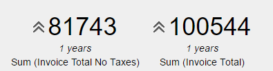
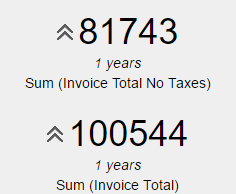

Orientation Property it's a QueryViewer control and a Query object property. It's only available when the Type property in QueryViewer control has the Card value assigned and allows displaying each query indicator side by side or one above the other. Note: this property works only when there's more than one indicator defined in the query's structure. Values
DescriptionWhen a Query object has more than one indicator defined in the structure, sometimes it's useful to show them horizontally or vertically. This can be accomplished by choosing the corresponding value of the Orientation property: If the chosen value it's Horizontal, the query will be displayed as shown in the following image:  In the other hand, if the value is Vertical, it will be displayed as the following image:  AvailabilityThis property's available as of GeneXus 15 Upgrade 2 See also |
| Backlinks | ||
| Dashboard Orientation property | Include Max and Min Property | Include Sparkline Property |
| Include Trend Property | Query Card Type |